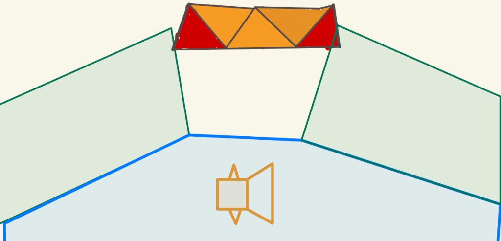

Name: Ermias Mesafnt UCSC Email: emesafnt@ucsc.edu
0
Red
Green
Blue
Size
Circle segments
Awesomeness: Undo removes only the last painted shape (square / triangle / circle stroke). It does not remove the scene from Draw picture or clear the whole canvas — use Clear for that.
